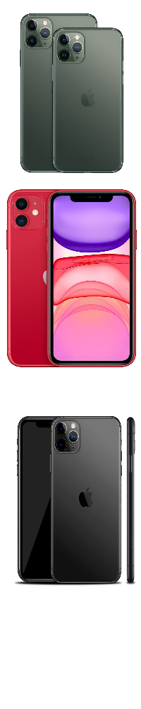
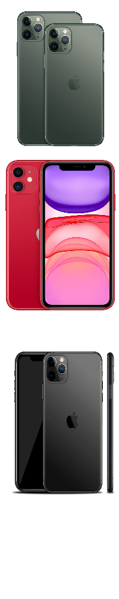

Samsung Galaxy Note 10
The Samsung galaxy note 10 is Samsung’s newest phone on the market right now. It works with the android 10 system. The galaxy note 10 has a lot of RAM memory: 8 to 10 GB is a lot if you compare it with other smartphones. The average RAM memory on a smartphone is 2 to 4 GB. This phone is only being sold with 256 GB storage. The phone has a battery of 3500 mAh which is really high. A feature implemented in this phone, is that it can be charged by other phones if you lay them on eachother. This phone also has a decent size, it has a height of 151 mm, a width of 71.8 mm and a depth of 7.9 mm. The phone weighs about 170 grams. The phone has a pretty good camera, it has a telephoto, wide-angle and an ultra-wide option. And because this phone is part of the note series, it has a special pen that can be used to control the phone.
iPhone 11
The iPhone 11 is Apple’s newest phone on the market. It has an iOS 13 operating system. The iPhone 11 has 4 GB Memory of RAM, which is good. This phone also has three options for choosing how much storage you want. This phone can be sold with 64 GB, 128 GB or 256 GB. This could be handy if you don’t need so much storage. The phone has a 3110 mAh battery. This battery can be charged by fast charging and wireless charging. The phone has a big size, it has a height of 150,9 mm, a width of 75,7 mm and a depth of 8,4 mm. The phone weighs about 194 g which is quite heavy. The phone has an excellent camera, it contains burst-mode, 6-element lens, 4K video recording and night mode.
Best?
Let's first start with comparing the RAM memory, you can see that Samsung works with an 8 or 10 GB RAM and iPhone with a 4 GB RAM. You can see that Samsung has won this one with a really big difference. For storage Apple wins, because Apple has more options to chose, but the best option for both phones are the same. If you compare the batteries you can see that Samsung won with 3500 mAh against Apple’s 3110 mAh. Because the iPhone 11 contains fast charging and Samsung does not, the charging goes to Apple. With the sizes of the phones there is a really small difference, the iPhone is a bit wider and deeper but it also weighs more. In this case there is not really a winner, because size does not matter. If we compare the camera, Apple has more options for the camera, but Samsung has a better zoom. So Apple has a better camera.
To conclude, as we compared the two phones the Samsung galaxy note 10 has better statistics than the iPhone 11. To answer the question which is superior, Samsung is the better phone.